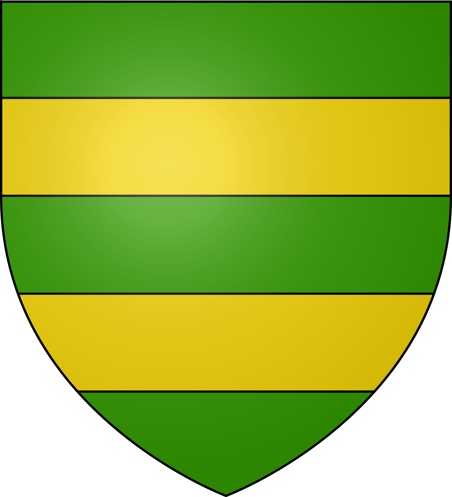
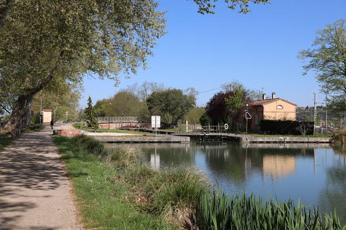

Castelnau
Le Château neuf aux
Étroites Fontaines


⟹ Château · Canal · Eurocentre ⟸

Un nom qui raconte un paysage. Castelnau-d'Estrétefonds vient de l'occitan Castel Nau d'Estretas Fonts — en latin Castellum Novum Strictis Fontibus —, le « château neuf aux étroites fontaines ». Le site est habité dès la Préhistoire, comme en témoignent des pierres taillées d'une rare finesse, et la voie romaine reliant Tolosa (Toulouse) à Aginnum (Agen) passait à proximité.
Xe siècle : sur les chemins de Compostelle. Le village entre dans l'histoire avec les pèlerinages vers Saint-Jacques. Les Hospitaliers y créent des haltes d'hébergement ; le village de Saint-Martin prend le nom de Castelnau avec l'arrivée des seigneurs féodaux et l'édification de leur château.
1159 : Henri II Plantagenêt et Thomas Becket. Lors de sa guerre contre le comte de Toulouse, le roi d'Angleterre Henri II prend Cahors et attaque plusieurs châteaux, dont celui de Castelnau, où il séjourne. Ses troupes campent au pied du château, dans un champ appelé encore aujourd'hui le « Camp del Rei ». Selon la tradition, son chancelier Thomas Becket fait détruire la forteresse avant de quitter les lieux.

Du Moyen Âge à la Renaissance. À la fin du XIIe siècle apparaît la famille de Castelnau, seigneurs du lieu. Au XIVe siècle, le bourg est réputé pour son hôpital. En 1500, la seigneurie passe à la famille de Vabres ; en 1537, Michel de Vabres embellit le château, qui compte alors quinze pièces à cheminée, deux salles d'apparat et un grand escalier. Au XVIe siècle, une nouvelle église Saint-Martin s'élève à côté du château.
1621 : Louis XIII au château. Les guerres de Religion n'épargnent pas Castelnau. En 1621, lors du siège de Montauban, le roi Louis XIII séjourne au château, devenu l'une des étapes de la campagne royale contre la place protestante.
La Révolution et le XIXe siècle. En 1790, Castelnau devient chef-lieu de canton, avec Bouloc, Saint-Jory, Saint-Sauveur, Saint-Rustice, Fronton et Pompignan, avant que ce rôle ne passe à Fronton en 1808. Le château accueille gendarmerie, corps de garde et prison. En 1814, la 3e division anglaise stationne dans le village, sans combat ni destruction.
Artichauts, chemin de fer et briqueteries. Au XIXe siècle, le village se spécialise dans la culture des artichauts — les « artichaou de Castelnaou ». L'arrivée du canal latéral à la Garonne puis du chemin de fer (1855) facilite le transport des récoltes. En 1875, deux briqueteries ouvrent l'ère industrielle ; de l'une d'elles subsiste une cheminée haute de 45 mètres.
1995 : Eurocentre, un carrefour européen. Depuis 1995, la plateforme multimodale Eurocentre se développe à cheval sur Castelnau-d'Estrétefonds et Villeneuve-lès-Bouloc, au croisement de l'autoroute A62, de la voie ferrée et du canal. C'est l'un des plus grands pôles logistiques de France : la commune offre aujourd'hui plus d'emplois qu'elle ne compte d'actifs résidents.
Un patrimoine protégé. Trois édifices sont protégés au titre des monuments historiques : le calvaire, classé en 1979, le château, inscrit en 1987 puis classé en 1992, et l'église Saint-Martin, inscrite en 2001. Depuis 1963, le château abrite la communauté « Notre-Dame du Bon Accueil » des Petites Sœurs de Marie Mère du Rédempteur.
Castelnau-d'Estrétefonds est une ville de passages : la voie romaine, les chemins de Compostelle, le canal, le rail puis l'autoroute ont fait de ce « château neuf aux étroites fontaines » un carrefour entre Toulouse et l'Europe.
Repère synthétique — L'Âme des RégionsPour aller plus loin — sources et documentation :
• Ville de Castelnau-d'Estrétefonds — histoire et patrimoine
• Communauté de communes du Frontonnais
• Église Saint-Martin — base Mérimée (POP)
• Archives départementales de la Haute-Garonne
• Haute-Garonne Tourisme — découvrir le nord toulousain
• INSEE — Castelnau-d'Estrétefonds
Le peintre Philippe Peyrane, baptisé à Castelnau en 1780, fut l'élève de Jean Suau puis de Jacques-Louis David ; le musée des Augustins de Toulouse conserve deux de ses toiles, dont un autoportrait. Eugène Rouart, maire de 1905 à 1919, conseiller général puis sénateur, mourut à Castelnau-d'Estrétefonds.
Le prêtre et essayiste Georges Morand, exorciste officiel du diocèse de Paris jusqu'en 2013, s'est retiré à Castelnau-d'Estrétefonds. Le mausolée néogothique du marquis de Cambolas, qui n'a jamais abrité sa dépouille, rappelle les grandes familles qui ont marqué la commune.
Le souvenir des Hospitaliers et des pèlerins de Compostelle, le « Camp del Rei » d'Henri II Plantagenêt et la présence d'une communauté religieuse au château depuis 1963 composent une mémoire locale singulière. Les armoiries de la commune sont « de sinople aux deux fasces d'or ».
Accès : Castelnau-d'Estrétefonds est à 21 km au nord de Toulouse, directement desservie par l'autoroute A62 (sortie 10.1 – Eurocentre) et par la RD820. La gare, sur la ligne Bordeaux–Sète, accueille des TER vers Toulouse-Matabiau, Montauban, Agen et Brive ; la ligne express Hop!302 rejoint le métro Borderouge.
Office de tourisme : Les informations touristiques sont relayées par la mairie et la communauté de communes du Frontonnais ; le chemin de halage du canal se prête aux balades à pied et à vélo.
Conseil de visite : associez le cœur historique (château, église, calvaire) et une balade le long du canal ; la proximité de la gare permet une visite facile sans voiture.